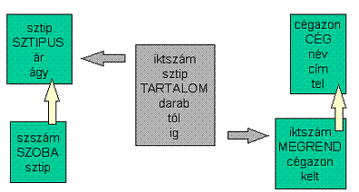
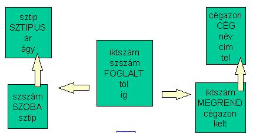
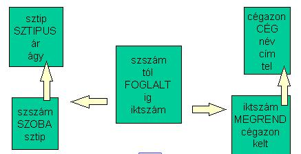

8.3. Szálloda
Egy szálloda forgalmára készítünk adatbázist az alábbi bemenő bizonylat alapján:
|
Cég adatai
Kelt
|
|
SZOBAFOGLALÁS
|
|
3 darab kétágyas zuhanyzós
dátumtól - ig 1 darab egyágyas fürdőszobás dátumtól – ig |
|
Visszajelzést kérünk. |
|
(aláírás, pecsét) |
Pontosítások:
- a szobákat a szobaszámuk azonosítja
- egy szobatípusból több szoba lehet a szállodában, melyek típusa, ágyszáma és ára megegyező
- a megrendelők iktatószámot kapnak a rögzítéskor (a megrendelésre írva őrzik egy ideig)
- a megrendelők, amiket cégek vagy magánszemélyek írnak a szállodának - azonosítót kapnak (jelen esetben csak cégazon, pedig a cégek között magánszemélyek is lehetnek)
- az aláírást, pecsétet, melyek hivatalossá teszik a megrendelést, képként lehet tárolni, amint egyéb, nem hagyományos típusokat is megenged a választott adatbáziskezelő rendszer
Az alábbi adatbázis, melyben csak a megrendelők (megrendelési bizonylatok) tartalmát tároljuk, nem ad lehetőséget a visszajelzés igényének teljesítésére.

Figyelem!
A fenti minta-bizonylatra 2 új sor keletkezne a TARTALOMban.
Ha azonnal le kell tudni kérdezni, van-e kívánt számban üres szoba a kért típusból adott időkorlátok között, akkor a megrendelési bizonylat tartalma helyett a lefoglalást tároljuk. Ez annyit jelent, hogy a megrendelőn kért intervallumban a kért szobatípus szobáit ellenőrizni kell, hogy le vannak-e már foglalva. Tehát a foglalást azonnal szobához kötve osztjuk ki, és ezek között keresünk a további megrendelés alkalmával.
Nézzük a használható adatbázist:

Figyelem!
A fenti minta-bizonylatra 4 új sor keletkezne a TARTALOMban.
Már csak egy probléma lehet: Ha a megrendelő egyes tételei időintervallumának nincs metszete (például előre 3 hónapra lefoglalnak egy megrendelőn 2-2 éjszakát ugyanolyan szobatípusból), akkor most nem foglalhatjuk le ugyanazt a szobát (nézzük meg a foglalt kulcsát!).
Ezt kiküszöbölve lássuk a végleges adatbázist:

Figyeljük meg a Foglalt kulcsát: egy szoba adott dátumtól csak egyszer foglalható le. Ebben keresni tényleg nem egyszerű; a nem kiadható szobák az új foglalás kérdéses intervallumával akárhogy ütköző lefoglalt szobák az adott szobatípusból. (A következő részben viccből majd megállapíthatjuk, hogy ahol napokra előre üresen tátonganak a szobák, bizonyára egyszerűbb minden napot manuálisan bejelölni, mint megírni ezt az SQL-ellenőrzést.)
Megjegyzés: A szobatípusnak lehetne leírás mezeje (pl. zuhanyzós, fürdőszobás, panorámás, nászutas stb.).
Milyen feltétel mellett lehet az alábbi feladatokat az adatbázisban elvégezni?
- egy cég törlése
- egy szobatípus árának megváltoztatása
- egy megrendelő felvitele
-
egy foglalás felvitele